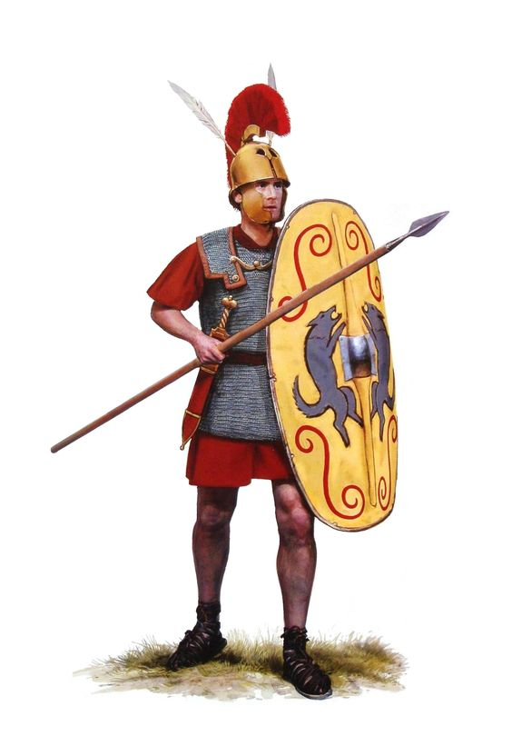

Римское войско
Прочитайте материал параграфа об устройстве римского войска. Составьте рассказ о легионе, используя иллюстрацию.

Воины римской армии времён Ранней республики сами обеспечивали себя доспехами и оружием. Первыми вступали в бой бедные граждане (велиты), которые могли приобрести только небольшой щит, короткий меч и дротики. В бою велиты метали дротики в противника, а затем отступали за спину тяжеловооружённых воинов.
Легион (4500 воинов: 1200 воинов лёгкой пехоты, 3000 тяжеловооружённых воинов, 300 всадников) делился на манипулы. Манипула – это отряд в составе от 60 до 120 воинов. Во главе каждой манипулы стоял центурион. Манипулы выстраивались в шахматном порядке в два- три ряда по 10 человек в каждом. В первом ряду находились молодые воины (гастаты) в возрасте от 20 до 25 лет, которые почти боевых действий.
Командир римского отряда. Рисунок нашего времени
Второй ряд манипул составляли более опытные воины (принципы) в возрасте от 30 до 40 лет. Когда консул считал, что воины первого ряда сделали в сражении всё, что могли, он командовал им отойти. В сражение вступали воины второго ряда.
Римский воин-легионер. Рисунок нашего времени
Триарий, тяжеловооружённый пехотинец В третьем ряду манипул находились самые опытные воины (триарии). Использование консулом триариев свидетельствовало о решающем значении сражениия. С флангов легион защищала конница.
